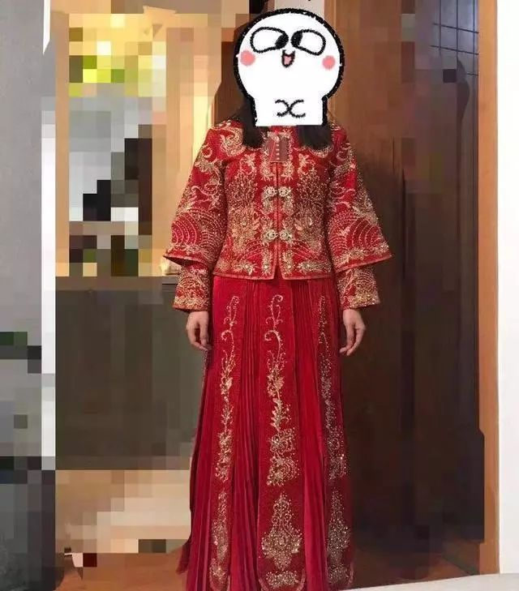
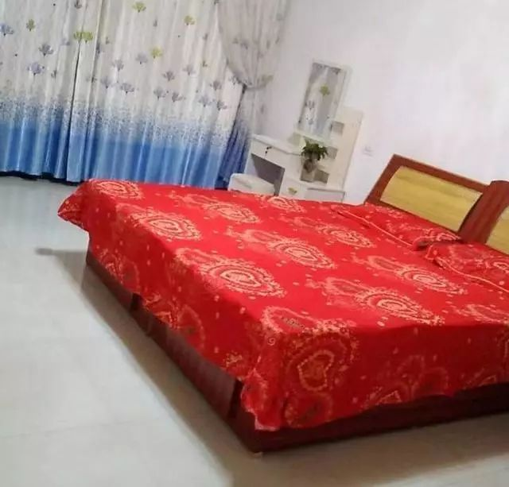
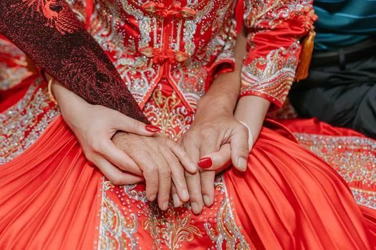
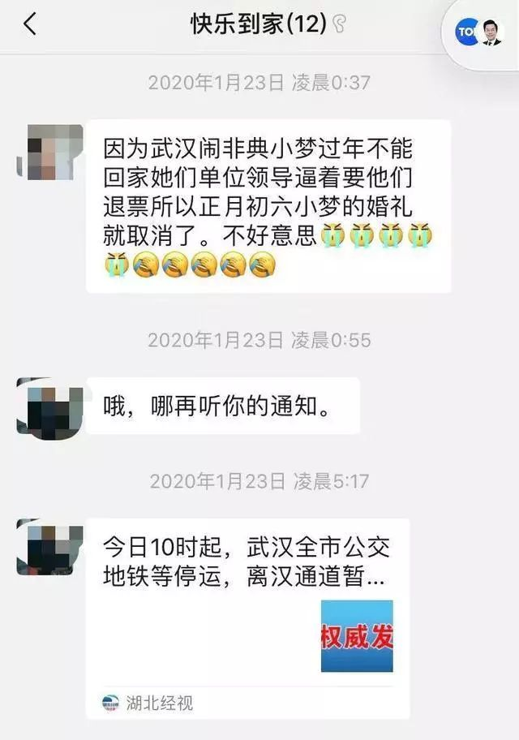

在人间丨父亲双肺感染严重，然而一床难求
原文链接 备份链接 我是一名在武汉工作的普通高校教师，爸妈也在武汉工作。在1月23日之前，我从没想过今年家里会遇到这样的灾难。这几天，是我人生三十余年最难熬的时间。本来应该欢喜迎春，却不料因为疫情的扩展，在武汉和老家湖北当阳相继封城后，我 …

妈妈总说我出嫁了他们一生的任务才算完成
口述/小梦（上海读研，定居上海）
我老家在湖北一个小县城。
9天前，亲友群里发来消息：武汉封城，小梦从上海回不来了，初六的婚不结了。
虽然年纪和小梦相差不大，但按辈分来说，她算是我的侄女。
婚礼取消了，小梦人如今还在上海。
我拨通了这位很多年没有见过面的侄女电话，小梦告诉我，决定取消婚礼的那天，她妈妈从来没有像现在这样难过。
01
妈妈说我出嫁了这一生的任务才算完成
如果没有这场疫情，我和我的那个他会在初六，在我的湖北老家举行婚礼。
我和他已经谈了三年多，在上海也买房安了家。去年我们领了证，婚礼想在我老家先办，然后再去他老家办。过年的时候结婚，多喜庆啊。
我是家里的老二，姐姐早就结婚了，妈妈总说我出嫁了他们一生的任务才算完成。大家对这场婚礼都很期待。

我爸妈都在外地打工，爸爸在东莞，妈妈在武昌。
为了筹备婚礼，妈妈10月份就从武昌回老家了。
她早早就在县城订下了酒席，给我买了新衣柜、梳妆柜，虽然我已经不在家住好多年了。妈妈说，婚房简单布置下，装饰品等我们回家后自己再去挑。
妈妈也早早给亲戚们都捎去了消息：“初六小梦在XXX结婚，早点来吃酒哈。”
我时不时打电话问她物资准备得怎么样。妈妈说她准备了30个红包袋。我说30个不够，亲戚朋友的小孩那么多，不够给。
她笑着说，那我明天再去买些。
她还给我看了买的床上用品，我嫌颜色不好，她说明天再去买一床大红色的。

那段时间，全家都沉浸在准备婚礼的喜悦氛围中。
我穿上网上花四百多元买来的秀禾服，戴上头饰，拍照给他们看，姐姐帮我预约好了化妆师。
我在家人群里把拍好的婚纱照发给大家看，大家挑了几张最好的，让我冲印好了带回安陆。
我想取消婚礼，妈妈说你莫开玩笑，姐姐说你疯了吧
家里爸妈早就准备好了一切，基本不用我们再操心什么，我俩的公司放假也晚，我们就提前订了腊月二十八（1月22日）晚上的火车票，卧铺从上海坐到汉口，再转车回老家。
回家吃年夜饭，给亲戚们拜几天年，我就要结婚啦。
1月20日，钟南山院士说，冠状病毒会人传人，呼吁大家能不去武汉就不要去。我们开始意识到问题的严重性。
想到要在汉口转车，我开始在网上买口罩，医用外科口罩和N95口罩瞬间就没货了，只买到一些一次性的普通口罩。
我给爸妈打电话，让他们在家千万注意，不要接触武汉回来的人。我爸说好的好的，我妈笑着说没事，之前老早就在传这个事了，都是谣言，幼儿园好多小朋友就得了感冒，很快就都好了。
第二天到了公司，每个人都在谈论新型肺炎。网上的一些消息让我了解到，武汉的情况可能比我们想象中还要糟糕，我忍不住又买了一些口罩。
▲创意图
那一天在公司，我心神不宁，开始犹豫。明天我就要坐上车回老家结婚了，可是，可是……
晚上妈妈给我打电话，絮絮叨叨嘱咐我走之前一定把家里收拾好，记得断电断水断燃气。
我等她都说完，慢吞吞说：“妈，我还在想，到底要不要回去。”
电话那头妈妈的语气马上就变了，我都能想象出她的眉毛皱在一起懊恼的样子。“嗯？！”
“你莫跟我开玩笑，都准备好了，你说不回来了？！”
我说不出话了，心里很不是滋味。电话里，我听到我那可爱的小外甥在气鼓鼓地喊：“姨妈要是不回来，以后就都别回了！”
小外甥很喜欢我，知道我很快要回家，就提前好几天住到我家里，盼着我回去。
我妈语气稍微缓和了些，她开始劝我。她说，你怕武汉的病，那我们不从武汉转车不就没事了？你人是一定要回来的，婚礼是肯定不能取消的。
我怎么解释疫情严重她都不听，坚持说办酒席是没有问题的。
我只好挂了电话，求助我姐，让她帮忙劝劝妈妈应该还有用。
可是我刚告诉姐姐，想取消婚礼。姐姐就说：“你疯了吧！小题大做。我们可拉不下这个脸！”
我成了孤岛。
决定还是回家结婚，真得病了就认命
没有一个人支持我。
早上醒来，我对老公说，还是回家吧，实在是不想让家里人失望。“要是真感染上，得病了，我们就认命。”他说好的。

▲创意图
我们把从汉口中转的车票改成从武昌中转，安慰自己，跟发生疫情的海鲜市场隔了一条江，情况应该会好点。
妈妈的电话又来了：“你回不回？”
“回吧，回的。”嘴里这样说，我心里还是不愿意的。
上海此时已经是人心惶惶了，这一整天都特别难熬。我想办法又辗转弄来了一些N95口罩，
老公开始收拾行李。
好朋友的家也在湖北，她决定不回去了，我把家里钥匙拿给她，让她过年帮忙照顾下我们的猫。
我要回去结婚了。
02
最后时刻我犹豫了，爸爸说不回来以后都别回了
这漫长的一天还没有结束，我手里握着晚上九点的火车票，躺在床上，一动也不想动，老公还在收拾行李，虽然我知道他也不想回。
我妈又发语音消息来了：“决定回了就莫犹豫，快点准备走！”

我们又开始了新一轮的争吵。我说万一办个酒席把别人感染了，要被人骂一辈子的。我妈说，都是你说得吓人的，安全得很。
我爸之前一言不发，这次也直接吼了起来：“不回来以后都别回了！”我妈说：“要是不回来，男方的婚礼我们也不参加了！”
爸妈脾气一直很好，待我们两姐妹也一直很宽容体谅。这么多年来，我第一次见爸爸妈妈这么生气，他们期待了这么久，是我让他们失望了。
我挂了电话，哇地哭了起来。
晚上妈问我上车没。消息我看到了，我把手机扔到一边，再也不去回她。
她又去问我老公，听到已经退票的消息，妈妈说她从没有像现在这么难过。
那套秀禾服，我一定会穿上的
这一夜哪里能睡安稳。我哭哭醒醒，凌晨四点，我又一次醒来，这次再也睡不着了。
我终于把手机又打开，看到妈妈夜里十二点半在亲戚群里发消息告知大家婚礼取消。

我妈不好意思说是我不愿意回，就跟大家说，是我单位领导硬逼着退票，实在是回不了了，对不住大家。
这时候武汉封城的消息也传来了。群里，亲戚们没有说什么，大家都应该知道事态的严重性了。
我想了很久，早上七点多的时候也终于忍不住在亲戚群里开始回应大家。
我说，真的非常抱歉，只是非常时期，为了大家的健康考虑还是要取消，也希望大家少走动，戴口罩，勤洗手。
我再给妈妈打电话，明显听得出，她的气已经消了大半，这次真的开始理解了。
她让我们在上海照顾好自己，她已经把酒席都退了。
没过几天，湖北多个县市都封了，我老家也封了。爸妈完全谅解了我们，还安慰我们说托了婚礼的福，家里囤了一大堆的菜，不怕没粮食了。

我看到，前几天妈妈在网上发了我们的婚纱照视频，她说，她的小棉袄要出嫁了。
老家还办婚礼吗？我不知道，姐姐说要么就不办了吧。
但是我知道，那套秀禾服我一定会穿上的。

记录平凡而普通
的人生


你“在看”我吗？点一下让我知道

原文链接 备份链接 我是一名在武汉工作的普通高校教师，爸妈也在武汉工作。在1月23日之前，我从没想过今年家里会遇到这样的灾难。这几天，是我人生三十余年最难熬的时间。本来应该欢喜迎春，却不料因为疫情的扩展，在武汉和老家湖北当阳相继封城后，我 …
原文链接 备份链接 今年的除夕夜，对武汉人民，甚至全国人民来说都很特别。／《饮食男女》 *昨天，我发了一条朋友圈，问武汉朋友怎么吃年夜饭，所有的回复都是：取消了全部的年夜饭和聚会。* 除夕夜的前一天，早上十点多，大姑妈在家庭微信群发来了 …
原文链接 备份链接 对于封城，虽然心里有准备，但没想到来的如此之快。 腾讯新闻《潜望》 特约作者 何品慧 编辑 刘鹏 我是一名土生土长的武汉人，家住在离疫情源头武汉华南海鲜市场不足三公里的地方，在疫情最初发现到现在为止，在武汉历经了全过 …
原文链接 备份链接 自新型肺炎疫情爆发以来，湖北乃至全国多个省份的医院因防疫物资短缺，向社会发出求助。而另一种声音却在说防疫物资是充足的，没有短缺。一时之间，防疫物资成为了薛定谔的猫。 今日来信的这位作者，便是自发为一线医院筹集防疫物资的 …
原文链接 备份链接 正月初二，1月26日，从武汉回潜江第六天。 潜江今日仍无病例确诊。 早上起来，精神不错。昨晚种种郁结一扫而光。 听丁雪的话，加了衣服。原来计划初四左右回武汉，衣物带的少。也低估了潜江的寒冷，无裤子可加了。岳母 …